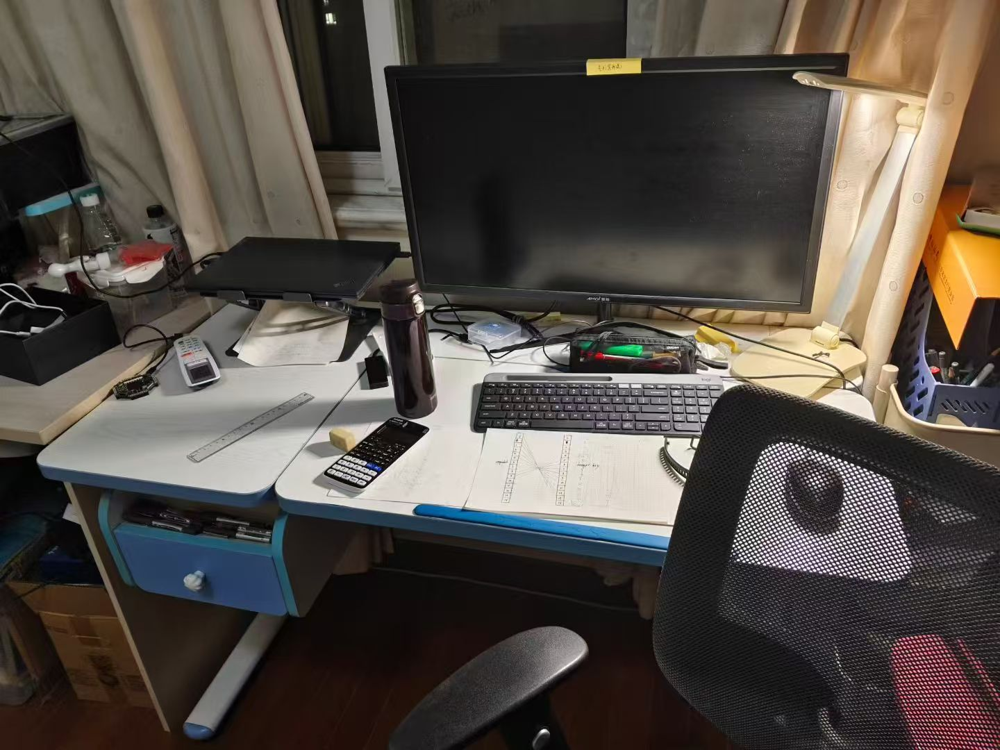

饶辅天
数字芯片工程师 & 技术爱好者
关于我
北京工业大学信息科学技术学院 · 电子科学与技术专业本科在读，专注于数字芯片设计与计算机体系结构。
具备从 RTL 设计到 FPGA 实现的完整开发经验，做过 AES 加解密算法的硬件实现，目前正在"一生一芯"计划中构建自己的 RISC-V 处理器。热爱 CS，乐于分享，一直致力于找到更高效的学习方法。
项目经历
AES 协处理器 FPGA 实现与架构升级
集创赛国家级二等奖- 完成全部 RTL 设计与 FPGA 硬件实现，主导协处理器从算法验证到硬件部署的全流程
- 支持 ECB / CBC / CTR 三种模式与 128 / 192 / 256 位可变密钥长度，兼容 APB 总线接口
- 自主设计 UART 控制的下位机，用于验证 APB 总线时序与算核功能正确性
- 通过拆分流水线解决 FPGA 综合中的建立时间（Setup Time）违例，完成时序收敛
"一生一芯"计划：RISC-V 处理器设计
进行中- 模块化实现迷你 RISC-V 单周期 NPC（IFU / IDU / EXU / LSU / WBU），Verilator + DPI-C 实现访存与仿真终止
- 为 NPC 仿真实现 MMIO 地址解码、串口与 RTC 时钟，跑通 am-kernels cpu-tests、riscv-tests 与 Hello World
- NEMU 侧扩展至 RV32IM，实现 itrace / mtrace / ftrace 全套追踪 + iringbuf，并搭建 NEMU↔Spike 逐条 DiffTest
- 将 NEMU 的表达式求值 / 监视点 / sdb 移植到 NPC，仅重接 4 个后端原语即复用全部前端逻辑
获奖与荣誉
- 国家级二等奖 · 第九届全国大学生集成电路创新创业大赛 Robei 杯（队长） 2025
- 校级学习优秀奖（连续两年） 2023-2025
- 校级创新创业奖 2024-2025
- 校级三好学生 2024-2025
博客文章
业余生活
骑车、爬山，和一些值得记录的瞬间。





联系方式
邮箱: 3555957586@qq.com